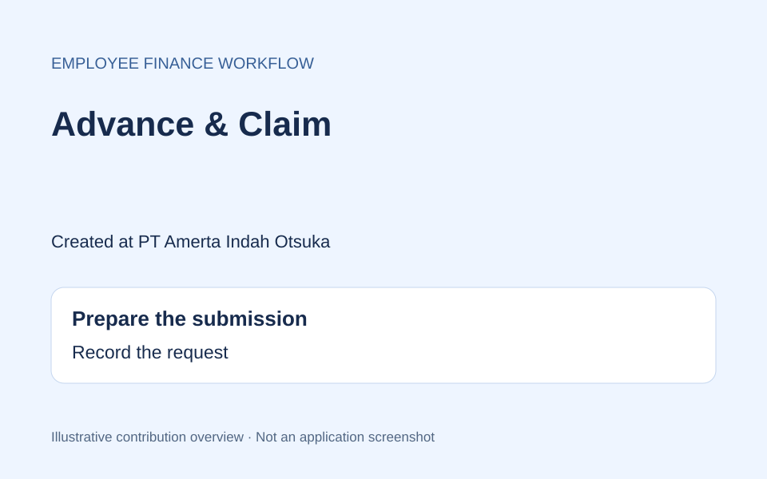

Advance & Claim at PT Amerta Indah Otsuka
I created the Advance/Claim application for employee advances and reimbursement claims. The web interface supports employees submitting and tracking their requests, with SAP integration for the relevant enterprise information.
The business need
An advance and a reimbursement claim serve different purposes. One requests funds ahead of an expense; the other claims reimbursement for an expense already incurred. A clear employee interface needs to preserve that distinction while making the request understandable to the business functions handling it.
Project focus
- Employee advance requests
The application supports the employee workflow for requesting an advance.
- Reimbursement claims
A related claim workflow supports employee expense reimbursement.
- Submission and tracking
The web experience lets users submit and follow their requests, connected to the relevant SAP information.
How the workflow connects
The diagram explains business responsibilities and information flow, rather than the former company’s internal deployment.
My contribution
I created the employee-facing Advance/Claim web application and worked on its integration with SAP information. The focus was to make the finance workflow easier for employees to submit and track.
Functional architecture
The employee interface captures the request context, application services manage the workflow, and integration connects the relevant SAP information. This is a functional view of the application, with advance and reimbursement retained as distinct request purposes.
Experience & lessons
The project demonstrates my work translating employee finance processes into an accessible web application. Its design lesson is to keep the request type and financial meaning clear throughout submission and tracking.